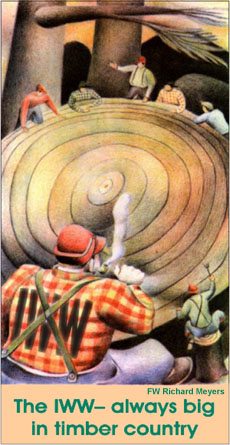

Revolt of the "Timber Beasts" - IWW Lumber Strike in Minnesota
Submitted on Sat, 10/22/2005 - 2:43am
Disclaimer - The following article is reposted here because it is an issue with some relevance to the IWW. The views of the author do not necessarily agree with those of the IWW and vice versa.
The footnotes are unfortunately unavailable at this time. We will add them as soon as we can locate them.
By John E. Haynes - Minnesota History Quarterly, Spring 1971 (Volume 42, number 5, pages 163-174)
The brawny lumberjack who tells tall tales, fells giant trees, wears checkered shirts, and loves flapjacks is familiar in American folklore. This romantic image, though based partly on fact, glosses over dark and frightful features of the lumberjack's life that in 1917 prompted Minnesota's sons of Paul Bunyan to down their saws and axes and walk out of their camps. Led by the Industrial Workers of the World (IWW), a radical labor group advocating industrial unions and the overthrow of capitalism through strikes, sabotage, and eventual revolution, the jacks' strike for a time paralyzed the lumber industry of northern Minnesota. The resolution of that strike helped redefine the boundcanes of permissible political and economic dissent in Minnesota, virtually erased the specter of strong IWW influence on the iron range, and served as a precedent for the state's treatment of dissenters during World War I. 1
The inciter of the strike, the IWW, was a national organization formed in Chicago in 1905 by western socialists and miners. The IWW made few inroads into the lumber industry of the Great Lakes states during the first ten years of its existence. A lumber workers' local was active in Deer River, Minnesota, by 1910, and "Wobblies" (as IWW members were popularly called) became involved in free-speech fights in .1911 and 1912, but it was the actions of mine workers at Virginia, Minnesota, that first awakened the lumber workers of the area to the power of united action. 2
The spark for the lumberjacks' 1917 strike was ignited in Virginia, a city of more than 10,000 people, in the summer of 1916 when Mesabi Range iron miners spontaneously walked off their jobs in protest against the contract wage system, long hours, and private mine police. Caught unprepared, the IWW tardily established headquarters for an energetic task force at Virginia to try to unite the unorganized miners into a viable strike force. The miners were forced to return to work by September, however, because of insufficient funds and repressive police actions against their leaders. Salvaged from the defeat was an organization known as Metal Mine Workers' Industrial Union No. 490. Local 490 continued to hold the allegiance of some 2,000 miners out of the 10,000 to 15,000 who struck.
Active in sustaining the fervor of this organization, the largest Wobbly group in northern Minnesota, was Charles Jacobson, long-time resident of Virginia and secretary-treasurer of Local 490, whose offices were located in Virginia's Finnish Socialist Opera. An intelligent, quiet, young miner, Jacobson possessed considerable leadership ability and common sense under pressure. His subtle humor never left him, even in times of crisis, and his keen sense of the IWW's fragile position on the range acted as a restraint on more militant Wobblies.
Of opposite temperament was a fellow Wobbly organizer named Jack Beaton who also operated out of the Socialist Opera in Virginia. Reveling in the nickname "Timber Beast" (abusive slang for "lumberjack"), Beaton epitomized the colorful, romantic tradition of the IWW. Dressed in a many-colored Mackinaw and tall leather boots, Beaton affected a belligerent proletarianism. A swashbuckler who usually carried a revolver in his hip pocket, he was never averse to flaunting his armed status. Beaton maintained a studied irreverence for the sensibilities of middle-class society and never passed up an opportunity to epater le bourgeois with his fire-eating rhetoric. A lumberjack himself for many years in Wisconsin, Beaton knew intimately the life of the lumber workers. His open manner, raw humor, and celebration of their life style made him an immediate leader among them.
Less concerned with tactics and timing than fellow-organizer Jacobson, Beaton and several other militants turned after September to the 1,200 employees of the Virginia and Rainy Lake Lumber Company's giant sawmill as fertile ground for union agitation. Here they precipitated the event which led directly to the lumberjack walkout.
The Virginia and Rainy Lake Lumber Company was a concern combining the northern Minnesota interests of the Weyerhaeusers, the extensive Minnesota and Wisconsin holdings of the Edward Hines Lumber Company, and the giant Virginia mills of the Cook and O'Brien Company. The Virginia and Rainy Lake plant was the largest white pine mill in the world as well as one of the "most modern and complete." The grounds covered perhaps fifteen square miles, and the plant produced an average of one million board feet of lumber a day on a 24-hour, seven- day-week schedule.3
Mill workers received between $2.50 and $3.00 a day for a 12-hour day and seven-day week. This daily wage was about 25 per cent below what sawmill workers in the Pacific Northwest, already organized by the IWW, received for the same work. If one ignores the number of hours worked, the mill pay compared favorably with that of most industrial laborers in 1916. The latter, however, earned as much in a 50- to 55- hour week as the Virginia mill workers did in an 84-hour week. In an easily seen comparison, the mill workers could note that common labor employed by the City of Virginia received $2.75 a day for an eight- hour day, six-day week and were spared the health and social costs of such a schedule.4
Many mill workers were Finnish in origin, and the gospel of industrial unionism was not altogether to them. Socialism had always been acceptable to a strong minority of Finns in northern Minnesota, and Finnish socialist halls, which often served as centers of communal life, existed in most iron range villages, In 1913-14 most of the Finnish socialist locals on the range had split from the Socialist party and joined the Industrial Workers of the World. The strong Finnish participation in the Wobbly-led iron range strike foreshadowed the support that many hundreds of Finnish workers at the Virginia and Rainy Lake mill gave Beaton and the IWW organization there throughout the sawmill strike and the allied lumberjack strike, Many of the workers, in fact, were black-listed iron miners from the Mesabi Range strike of the previous summer.4
Throughout the fall of 1916 Beaton and several others discussed conditions with mill workers and made the point that a union of industrial workers could force management to listen to the workers' grievances. Patience and careful organization were never "Timber Beast" Beaton's strong points, however, and when five nationally- prominent IWW leaders of the Mesabi strike were released from a strike-connectted murder charge in a "deal" with the authorities in early December, Beaton's determination for a confrontation intensified. The arrangement, which left several rank-and-file miners to plead guilty to manslaughter charges, prompted Wobblies and others to voice accusations of a sellout. Infuriated that the IWW appeared to be compromising itself in this way, Beaton lost all restraint in his agitation among the mill workers. Without the steadying influence of an experienced organizer, the mill employees soon worked themselves into a highly emotional state that could be satisfied only by immediate action. 6
On Sunday, December 24, 1916, several scores of mill workers met with Beaton at the Socialist Opera to draw up a set of demands. They asked for a flat 25 cents per day raise for all workers, an eight-hour Saturday night and Sunday day shift, no Sunday night work, a shift change every week, and no reprisals for union activities. The workers then elected a committee of six to present the demands two days later to the Virginia and Rainy Lake Lumber Company management along with an ultimatum demanding a reasonable response by noon on Wednesday, December 27, or the mill workers would go on strike. 7
At this juncture, Jacobson intervened. Experienced in bargaining tactics and more realistic than Beaton . about the strength of Wobbly organization in the mill, Jacobson argued that an immediate strike would be disastrous. He also telegraphed the details of the situation to William D. ("Big Bill") Haywood, IWW general secretary in Chicago. A veteran organizer and a founder and prime mover of the IWW, Haywood immediately wired back that "a successful strike at the present time in the Virginia mills would be hopeless. Must wait until better organized. Continue with organization work."8
The warnings were useless. The committee, with Beaton as spokesman, went as planned to the plant offices on December 26 to confront Chester R. Rogers, superintendent of manufacturing for the Virginia and Rainy Lake Company. Beaton presented the demands and emphasized the group's intention to strike if it failed to receive a reasonable reply. Rogers in turn demanded to know by what right Beaton gave him this ultimatum. Beaton retorted that the committee asked him to speak and showed the superintendent his IWW organizer's commission from Haywood. Rogers' reply was earthy: "I wouldn't piss on Bill Haywood. And I can piss a good bit." Understandably taking this as a negative answer, the "Timber Beast" turned and left. 9
Rogers' antagonism toward the Wobblies was more than a businessman's calculated hostility to union economic muscle. The superintendent regarded the IWW not only as a menace to his production costs but also as a threat to American society. He later testified before a legislative committee investigating the affair that Wobblies were "foreign agitators" whose only interest was to "make trouble for everybody, people with homes." He expressed contempt for his workers, too. "You can drive them like cattle," he asserted, and added that IWW agitators had them "hypnotized." To him the solution to labor discontent was simple: "They ought to pass a law when a foreign agitator comes into a community, to run him out." 10
When Wednesday noon passed with no word from Rogers or the company general manager, Samuel J. Cusson, Beaton called a strike meeting at the Socialist Opera. That night some 700 mill workers quickly shouted through a strike resolution. At dawn on Thursday, December 28, several hundred pickets waited at the gates of the huge Virginia and Rainy Lake Company plant. A majority of the 1,200 workers struck-- perhaps as many as a thousand. One of the plant's two main sawmills immediately shut down. The other was crippled and able to continue only intermittent production. 11
The sudden strike at the Virginia sawmill placed the larger IWW organization in a difficult position. The outcome of the earlier Mesabi strike had shown that, with time and the help of public authorities, the company could and would gather a new crew to operate the mill and wait out the strikers. But the Wobblies knew of at least one alternative which might force management to meet their demands-- quick, total shutdown of the entire lumbering industry. If the loggers quit the woods in a sympathetic strike, the sawmills would be silent despite any scab crew that might be gathered. Such a move, though, directly conflicted with the long-range strategy recently agreed upon by the national IWW.
Since its founding in 1905, the IWW had relied upon street-speaking, propagandizing, and seizing leadership of spontaneous strikes to further its syndicalist goals. The result was that the IWW remained small but famous, or infamous, across the nation for radical militancy and involvement in sometimes bloody, but always dramatic, strikes. These strikes, with few exceptions, ended in defeat.
It was in 1915 that a new IWW branch, Agricultural Workers Organization (AWO) 400, altered Wobbly tactics drastically. It repudiated soapboxing, guerrilla methods and quietly sent "job delegates" into the midwestern grain belt to organize migratory laborers. Radical propaganda was soft-pedaled and immediate bread-and- butter goals emphasized in an attempt to transform the IWW from an essentially propagandistic league into a powerful economic force, Through a series of small, well-organized strikes in 1916, and aided by wartime grain demands of European countries, the AWO won unprecedented wage increases for harvest hands. Members poured into the IWW through the AWO, whose membership was close to 20,000 by the end of 1916. 12
When the 1916 harvest season ended, the national AWO headquarters in Minneapolis, for a time located at 254-256 Hennepin Avenue, dispatched dozens of job delegates to lumber camps in northern Minnesota. Some worked as lumberjacks; others became cooks and blacksmiths. All quietly spread the Wobbly gospel of labor solidarity and radical unionism. By, December, the Daily Virginian reported that company foremen in many camps were finding stickers with the IWW slogan, "One Big Union," pasted on bunkhouses and cook shanties. Foremen attempted to eliminate Wobbly organizers but had little success. The job delegates worked discreetly and never hesitated to tear up their red membership cards or to disavow connection with the IWW if questioned by a foreman. 13
The IWW branch at Bemidji furnished the literature and office services for the job delegates. Wobbly locals in Virginia, Duluth, Gemmell, and Minneapolis, recruiting areas for camp labor, also contributed to the drive. These locals continued to conduct their traditional propaganda activities, but now the propaganda functioned as preparation for the actual organizing on the job.
The AWO job delegates worked slowly, hoping only to spread union sentiment among lumberjacks during the 1916-17 logging season. It would be a year, the wobblies calculated, before they would have gained through knowledge of lumberjacks' problems and won enough support to ask the loggers to strike. A sympathy strike in support of the mill workers, they feared, would abort these plans and test the job delegate system before it was ready.
Lumber company managers were equally skeptical about a potential lumberjack strike. Beaton had threatened to close down the lumber camps when the IWW mill workers first put their demands to Rogers, but the superintendent had laughed off the warning. Commercial papers such as the Daily Virginian and the Duluth News Tribune ridiculed Beaton's statement, and the latter featured the opinion of a Virginia and Rainy Lake Company official that the idea of a loggers' strike was a "joke." 14
Prospects of a major IWW walkout were enhanced, however, by the working and living conditions of the lumberjacks. Typically, jacks lived in rough-cut lumber shanties. A bunkhouse 30 feet by 80 feet by 11 feet would house anywhere from 60 to 90 men in rows of double- decked wooden bunks lining each wall. Each individual bed with its mattress of loose straw slept two men. Each jack received two or three woolen blankets from the camp (sheets were unknown). The turnover was so high that four or five men might easily use the same blankets each season. Virtually all the beds, blankets, and men were infested with lice. In 1914 inspectors from the State Department of Labor and Industries observed that "the conditions under which the men were housed . . . made it impossible for men to keep their bodies free from vermin." 15
Bunkhouses were ventilated only by doors at each end and one or two small skylights in the roof. One or perhaps two iron stoves, kept fired all night, provided heat. The poor ventilation compounded sanitary problems. The men worked 11-hour days in the cold northern Minnesota winter and generally wore two or three sets of underwear in addition to their outer garments. The combination of wet snow and hard labor soaked the jacks' clothes every day, but the men were without washing facilities either for themselves or what they wore. Since most of them put on all the clothing they owned (one old jack observed about the typical logger: "When his coat is buttoned his trunk is locked"), dozens of sets of wet-from-sweat clothes hung near the stove every night to dry for the next day. The steam from the clothing joined the stench of tightly-packed, unwashed bodies in the bunkhouse, prompting one Wobbly to comment that "the bunk houses in which the lumber jacks sleep are enough to gag a skunk." 16
Toilet facilities were primitive in the extreme. Privies were no more than shallow, open pits with a roof and some poles for seats. Excrement was only rarely treated with lime or even covered with dirt. State inspectors repeatedly and despairingly observed that "there seems to prevail an idea that toilet facilities in a camp are superfluous." 17
Safety precautions were ignored, too. Engaged in strenuous manual labor with lethal tools in frigid weather, lumberjacks had an extremely high accident rate. Although immediate first aid was therefore the jacks' greatest medical need, a survey of logging camps several years before the strike revealed that "in none . . . were there any facilities for giving first aid to the injured." 18 Testimony before a legislative committee in 1917 disclosed that nothing had changed in the intervening years.
For all its investigations the state had no authority to improve these conditions. In its 1913-14 biennial report, Minnesota's Department of Labor and Industries pleaded for jurisdiction. It quoted two of its inspectors who concluded after visiting a typical camp: "Both of us regretted that we did not have the authority to order all the men out of the camp and burn the place to the ground." Requests for regulation of sanitation in lumber camps were repeated, vainly, in the biennial reports of 1915-16 and 1917-18. 19
"As a community," economist and author Rexford G. Tugwell wrote, "a lumber camp is a sad travesty at best." The camps where the men spent the logging season of three to six months consisted of a few bunkhouses, the cook shanty, some equipment sheds, and the foreman's quarters. Six days a week the men were ;,wakened in the dark to give them time to eat and to reach the cutting area as the sun came up. After dark they returned for supper, a few free hours, and then a fatigued sleep in the lousy beds and foul air of the bunkhouses. There were no recreational facilities other than drinking the liquor the company commissary sometimes stocked and playing cards or a guitar the men might have brought with them. Most of the camps were completely isolated, so even a Sunday trip into town was rare. And, of course, the camps were without women.20
Because of these conditions the lumberjack was constantly on the move. He would return to the camps only after the fall harvest or when the open-pit mines of the Mesabi closed for the winter. Few lumberjacks could stand one camp for very long. They would quit, relax in a brief spree in the nearest sizable town, and move on to a new camp rumored to have more tolerable conditions. Therefore the Virginia and Rainy Lake Company employed a total of more than 22,000 men during one logging season, although it accommodated only about 2,000 workers in its camps at any one time. The turnover of workers averaged 74 a day or a completely new crew each month.21
Lumber companies were clearly concerned only with the jacks' muscle, not their well-being. Social welfare and church organizations had not 'as yet displayed any concern for the loggers. When the workers came out of the woods most townspeople avoided them. They were "timber beasts," foul men in filthy clothing who had no place in respectable society. After weeks of the monotony of camp life many loggers made straight for the bars and brothels. There, at least the "beasts" and their money found welcome.
The IWW was perhaps the first organization to express interest in the welfare of the lumberjack. In the bunkhouses during the fall of 1916, job delegates began talking to small groups about the power of "One Big Union," patiently attempting to break through the jacks' apathy and suspicion. The job delegates told them others were responsible for their wretched conditions. Rather than search for that rare gem, the decent camp, the jacks could organize and force their employers to improve the camps.
At the same time lumberjacks were being welcomed in IWW halls, such as Virginia's Socialist Opera, in towns near the lumber camps. Offered a back room to sleep in, coffee off the stove, and friendly conversation, the jacks were again asked to consider the notions expressed by the job delegates in the camps. They heard about a new tomorrow when there would be "One Big Union" and a lumberjack could walk with dignity and live in comfort. The success of the IWW centers where loggers could "escape the torture of forever being indecently kicked about" was considerable. 22
With only a few months of concerted and disciplined effort behind them, AWO 400 job delegates had no plans to bring the jacks into any conflict in the 1916-17 season. But the Wobbly spirit of uncompromising militancy ran deep in passionate souls like "Timber Beast" Beaton, and his insistence forced Charles Jacobson's hand. The secretary-treasurer of the mine workers' union reluctantly committed the Wobblies to the strike venture.
On December 27, the day when Superintendent Rogers declined to answer the mill workers' demands, Jacobson and Beaton organized a "flying squad" of a dozen IWW militants to carry word of the proposed strike to the camps. Early on December 28, the first day of the mill strike, several hundred workers gathered at the Virginia and Rainy Lake plant gates while the flying squad headed north to International Falls. Most of the company's camps lay on logging railroads off the present- day Canadian National Railway Company line. Communications from Virginia to IWW branch secretary Nels Madison in Bemidji sent another hastily-organized flying squad north from Bemidji to the predominantly International Lumber Company camps along the line to International Falls (now operated by the Northern Pacific Railway Company). As soon as the squads were dispatched, Beaton left for Wisconsin. He had done some organizing there and hoped to persuade Wisconsin and perhaps even Michigan jacks to strike with those in Minnesota . 23
When men of the flying squads reached a camp they sought out AWO job delegates, told them of the plans, and spelled out the demands agreed upon by IWW members familiar with camp conditions: a $10 per month pay increase, a nine-hour day, clean bedding and sanitary food, cleaning of bunkhouses twice a week, and no discrimination against union employees.24 Three lumberjacks were to submit these demands to the camp foreman, who would almost certainly refuse to consider them.
The workers were then called together in the bunkhouses where the organizers reported to them on the mill strike and appealed for their help in the form of a walkout on Monday, January 1, 1917. Quickly the flying squad passed on to new camps while the job delegates continued agitation and attempted to rouse the men to strike. Lumberjacks were generally inarticulate, silent men, and for perhaps the first time in their lives they were being asked to make a collective decision. It is difficult to say what arguments raged in the crowded bunkhouses among men torn between the prospect of striking a blow for a better life and the suspicion that they were being used just as the company, barkeeps, cheap hotels, and brothels had used them. Factors in their decision probably included frustration, boredom, idealism, intimidation, and even fear of being left in the minority.
As the Wobblies passed through the camps the foreman, of course, immediately notified company officials and they in turn telephoned the county sheriffs. But the sheriffs were unable to gather deputies and reach the lumber camps before Monday. By then they were too late.
Early Monday morning the first lumberjacks in the camps farthest up the logging railroads packed their gear and walked out. Going south along the rail line, they were joined by workers from camps closer in. A thousand lumberjacks came out of the woods on the first day. Another thousand emerged on Tuesday, and hundreds more straggled in every day during the rest of the week. Trains were filled with lumberjacks riding into International Falls, Bemidji, Gemmell, and Virginia. Figures are difficult to verify, but more than a thousand of the strikers came from half a dozen Virginia and Rainy Lake Company camps. Another thousand struck from nine camps of the International Lumber Company (ILC ). 25
Local press coverage to the contrary, the first few days of the strike were surprisingly successful. One of the nation's largest lumber plants was almost completely shut down at Virginia, and International Lumber's sawmill at International Falls was also crippled by a partial walkout of mill workers. Both companies ceased all logging operations. A number of smaller companies and independent loggers were also shut down in northern Minnesota, but logging operations in central Minnesota were relatively unaffected. 26
Employers, though caught off guard, responded swiftly to the strike. Soon after the committee of mill workers left his office on December 26, Superintendent Rogers hired a large group of guards for the Virginia plant. At Rogers' request, Sheriff John R. Meining of St. Louis County obligingly deputized the guards even though they were paid, equipped, and directed by the Virginia and Rainy Lake Company. For good measure the sheriff deputized Rogers and put him in charge of the deputies.
Rogers also telegraphed other company mills around the state and obtained enough skilled sawyers and filers to keep one of the plant's two main mills in partial operation. 27 The plant lay inside the Virginia city limits, so Rogers' deputies lacked authority over pickets who stayed off company property and within the city streets. Virginia police co-operated with Rogers, however. On the first day of the strike they dispersed the picket line and pushed the men back to a point three blocks from the plant gates. They also arrested six pickets for distributing "flaring red bills." When the police were informed in court the next day that there was no law against distributing handbills in Virginia, the city council soon corrected this oversight by banning any handbill distribution as constituting an "unsightly appearance."28
Rather than wait for the new ordinance, however, the Virginia police found that imagination and a sympathetic judge sufficed to make existing laws work for arrests. Six leaders of pickets were jailed on charges of disturbing the peace, intimidation, and distribution of IWW literature. One Wobbly, Leo Ahlgren, was sentenced to pay a fine of $100 or to serve 90 days on the work farm for "intimidating" an unidentified complainant with the statement, "You better not go to work." Two others were fined $100 or given 60 days for taking part "in a disturbance of the public peace by speaking . . . the following words (sic), to wit, `Scab'."29
Fifty-three strikers, labeled by local newspapers as a "rebel gang," were arrested on January 1, 1917, and sentenced for allegedly taking over a bunkhouse in Camp 41 near Cusson, Minnesota. There they reportedly slept in bunks not assigned to them, ordered themselves fed, intimidated non-striking workers, and ran the cook out of camp. It apparently was of little concern to authorities that the arrested strikers were transported for eight hours in one unheated boxcar and in some cases nearly froze to death, or that no one could identify the men or testify to the tardily-arrived-at charges. In mid-January another 40 men, charged with obstructing the sidewalk in front of the Virginia and Rainy Lake Company employment office in Duluth and with distributing handbills about the strike, were similarly arrested and sentenced.30
The reaction of the local press to the lumberjacks' strike was close to hysterical. On January 1, for example, the Daily Virginian ran the headline, "Armed Squads of IWW's Drive Lumberjacks Out of Camps," over a report that described the "reign of terrorism" and "gun attacks" conducted by Wobblies who were "looting the camps" and would stop at "nothing short of arson and murder." The Minneapolis Tribune repeated all this and added well-poisoning and horse-crippling to the list of IWW acts. These charges were repeated many times by company officials, hostile legislators, county sheriffs, and a management- oriented press, although not a single specific instance of any of the accusations could ever be documented. No one, during the strike or in the investigation that followed, could be found who witnessed any burning, looting, shooting, or even threatening use of firearms. No victims were identified or came forward. No one was ever tried for these crimes for the reason that they probably never were committed.31
Terrorist charges served as an effective smoke screen for lumber company officials and co-operating lawmen while they moved to break the strike. The sheriffs of St. Louis, Carlton, Beltrami, Itasca, and Koochiching counties swore in hundreds of deputies in the first days of the strike. Most of the striking camps were in St. Louis and Koochiching counties, but deputies were dispatched to the other counties to prevent organizers from spreading the strike. These deputies operated under direct orders of lumber company officials--not without some logic since the companies paid most of the deputies' salaries. They received $2.00 a day, to which the companies added another $3.00 and board. At best, a lumberjack received a total wage of $1.50 a day and board.
Among farmers in Koochiching County the feeling against the lumber companies, particularly the International Lumber Company, was so strong that Sheriff Thomas P. White was unable to swear in local men. Consequently, International's employment office in Minneapolis scoured Twin Cities' poolrooms and bars for gunmen. Among those selected and sent north were non-citizens and minors whom Sheriff White then illegally swore in as deputies. So little attention was paid to the background of those who carried a gun and a badge that White and the company hired and swore in two spies from the Minneapolis IWW office.32
In Koochiching County Sheriff White personally led a posse to the IWW hall at Gemmell where many striking jacks of the ILC had gathered. White cleared the hall and locked it, arrested every Wobbly leader he could find, and told the striking workers to return to the camps or leave town. After a week or so White released those he had arrested because they could not be charged with any statutory crimes, but in that time the leaderless jacks had scattered to Bemidji and points south, losing all cohesion and organization.
Sheriff White displayed a peculiar sense of public responsibility and political morality. He hired his deputies through the International 'Lumber Company which paid more than half of each salary. At the direction of the company president, Edward W. Backus, White swore in ILC foremen as deputies and placed them in charge of the seventy-odd deputies patrolling the county during the strike. Nevertheless, in the previous election White had run on a strong anti- lumber company platform, publicly denouncing the alliance of county officials with Backus. When an amazed legislative investigating committee inquired how he had run on an anti-ILC platform in light of his later behavior, White frankly answered: "It was easier. If they [Koochiching citizens] had suspected you were a Backus man, you couldn't be elected." At a time when it was open scandal that Backus corrupted Koochiching officials to gain low tax assessments on lumber land and employed cutting policies which eroded farm land, White confessed that he had been "unable to find out" why Koochiching citizens would not elect a Backus man. He repeated all the charges of Wobbly terrorism but could not name a single victim or perpetrator or even a place where the acts were supposed to have occurred.33
After the Gemmell raid, Sheriff White left James McAndrews in charge of deputies stationed there and in the camps nearby. McAndrews was an ILC foreman who possessed special talents as a Wobbly hunter. It seemed that McAndrews could always tell a member of the IWW, as he said, "by his looks." When a camp came down with diarrhea, apparently because a cook failed to wash dishes properly, and a horse in another camp suddenly frothed at the mouth and died, McAndrews recognized the long arm of the Industrial Workers of the World. Any spoken criticism of the International Lumber Company heard by foreman McAndrews led to swift discharge, because "everyone that made any trouble in the camp, I think ... they were IWWs, and nothing else." Sharing Rogers' opinion that aliens were the main source of trouble and that most workers were of a low sort, McAndrews regularly termed them "vermin." In his zeal to smoke out Wobblies, McAndrews authorized the opening of federal mail by recruited deputies to check for subversive sympathies.34
The suppressive actions of White and his deputies in Gemmell and in the woods destroyed the cohesion of the strike against the International Lumber Company in the area of International Falls. Learning a lesson from the previous summer's mining strike in which workers lost the battle but salvaged a powerful trouble-making organization, Local 490, authorities took steps this time to break the back of the IWW movement itself.
The mining village of Eveleth led the way, adopting the simple expedient of banishing Wobblies. Disregarding statutory authority and constitutional liberties, Eveleth ordered all active IWW members to leave town or face arrest. The strategy, directed by police Chief Robert Mitten, was successful. The Eveleth branch of the mine workers' union disintegrated as its leaders either left or were jailed. 35
Following suit on January 2, the day after the lumberjacks struck and just about a week after the mills closed down, the police and fire commission of Virginia met in extraordinary session. It classified all Wobbly militants as "undesirables" and ordered them to leave town by 4:00 P.M. the next day or face arrest. This was enough for many IWW lumberjacks. They boarded trains for Duluth and the Twin Cities.36
IWW organizers and mill strike leaders who defied the banishment order were promptly jailed on charges such as loitering or vagrancy. Those who promised to leave Virginia were released while those who refused received stiff fines up to $100 as well as several months in jail. The leadership and discipline the job delegates exercised over the lumberjacks was already weakened by the dispersal of the men when they came out of the camps. The banishment order began destroying what unity remained.
A special target of the banishment order was Charles Jacobson. He could hardly be termed an outside agitator, however. He had been a resident of Virginia for 26 of his 28 years and was a family man and a property owner. As a full-time paid employee of Local 490, Jacobson avoided arrest on vagrancy charges. But the Virginia police were resourceful. Late in the afternoon of January 4, 1917, Jacobson sat in his office in the Socialist Opera, working on the account books of the mine workers' union. Owen Gately, Virginia chief of police, walked in and arrested him for "lurking and lying in wait with intent to do mischief," terms of an ordinance--found on many statute books today--designed to allow police to control street solicitation by prostitutes. The judge allowed this questionable extension of the law and handed Jacobson a $100 fine or 90 days in jail.37
Another miner, Richard Mattson, took over Jacobson's position as the union leader served his sentence. Mattson also ignored orders to leave town by 4:00 P.M. on January 13 and on January 15 was arrested and convicted under the ordinance regulating street-walking. By the middle of January virtually every IWW organizer or militant was either in exile or in jail. Then on January 16, whatever substance there was to Jack Beaton's fantasy of a general Great Lakes states lumber strike vanished when the "Timber Beast" was arrested and jailed on a concealed weapons charge in Park Falls, Wisconsin.38
Most of the Minnesota press fully approved the illegal but highly effective expulsion policy. The Duluth News Tribune congratulated Virginia on its banishments and commented, in reference to their manifest illegality, that for Wobblies "to claim rights under the laws they defy, under the constitution they war upon, and the flag they deny, is absurd." Editorially, the Minneapolis Tribune agreed that sympathizers with the IWW should be denied constitutional liberties. Adding its enthusiastic endorsement, the International Falls Press proudly noted that local police were adopting the banishment policy. Aside from various labor union journals and such left-leaning papers as the Mesaba Ore and Hibbing News, very few papers took issue with the methods used to suppress the IWW in northern Minnesota. The St.Paul Dispatch, although not usually sympathetic to labor, was one of the few journals with a sizable circulation to condemn as unconstitutional and undemocratic the suppressions in Virginia.39
IWW organization on the range was effectively destroyed. The job delegate system exercised enough leadership to get the men out of the woods, but when the jacks found that the IWW could provide only meager strike relief funds, hundreds were forced to hop freight trains for Duluth and the Twin Cities to find other jobs. With the strike leaders jailed or exiled, those who had gathered at the IWW halls in Gemmell, International Falls, Bemidji, and Virginia drifted away in various directions.40
The mill workers returned to their jobs in the last week of January. The lumberjacks held on a bit longer and neither the Virginia and Rainy Lake Company nor the International Lumber Company was able to reopen logging operations until February. What remained of the Wobbly lumber strike leadership gathered in Duluth. On February 1 the leaders called off the strike, claiming a partial victory by way of improved conditions.41
Most companies did attend to their camps better after the strike. The ILC bought new blankets for the men and raised slightly the base pay. The quality of food seems to have been improved, too, in most camps. In 1917 the Virginia and Rainy Lake Company spent nearly 20 per cent more per man for food than earlier. Wartime price inflation accounted for part, but not most, of the increase.42
The Wobbly Metal Mine Workers' Union Local 490 disappeared as the IWW was driven from overt activity on the Mesabi. The IWW promised to return to the camps and the mines, but before it could launch another offensive the nation entered World War I.
Minnesota, along with twenty-one other western states and two territories most affected by radical activities, passed a criminal syndicalism law in 1917 making it illegal to advocate "crime, sabotage, (...malicious damage or injury to the property of an employer by an employee) violence or other unlawful methods of terrorism as a means of accomplishing industrial or political ends." In September, 1917, Minnesota became the first state to convict anyone under such a law when Jesse Dunning, a lumberjack and former secretary of the IWW local at Bemidji, was convicted of publicly displaying books teaching sabotage. A bill making a fund of $50,000 available for immediate action against labor and radical activities only narrowly failed to pass the Minnesota legislature, but talk continued about alleged intimacies between the Wobblies and the Kaiser or the Bolsheviks.43
Federal prosecution for antiwar activities placed the IWW strictly on the defensive. On the iron range agitation continued among die-hard Finnish Wobblier who conducted minor demonstrations during and immediately after World War I. But the wartime Minnesota Public Safety Commission had thoroughly infiltrated the organization and frustrated it at every turn. 44 Techniques developed to suppress the IWW in northern Minnesota were later extended to pacifists, war dissenters, and members of the Nonpartisan League who faced official prosecution for their beliefs and activities.45